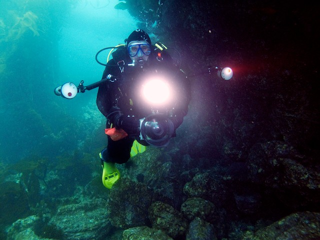

Channel Islands July 2010
Index
Previous
10 of 45
Next
Name: greg_camera_hr2-0470
Date: 7/12/10 12:16:54 PM PDT
Camera Model: Canon PowerShot G10
Lens: 6.1-30.5 mm
ISO: ISO 200
Focal Length: 6.1mm
Exposure Bias: 0 ev
Aperture: ƒ/4
Shutter Speed: 1/30
Flash: Flash fired, compulsory flash mode, red-eye reduction mode
White Balance: Auto White Balance
Metering Mode: Pattern
Exposure Mode: Manual Exposure
Profile Name: Adobe RGB (1998)
Pixel Size: 3000 × 2250 (6.8 MP)
